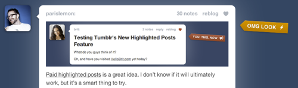

This is interesting. Tumblr just rolled out a new feature that allows a blogger to spend $1 to make their post stand out to their followers on the dashboard by adding a “OMG Look” tag next to it.
This is interesting. I like the idea of it, but not the actual implementation.